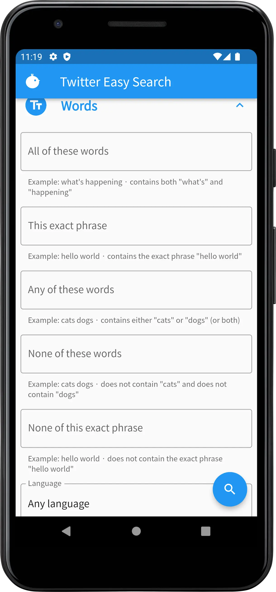
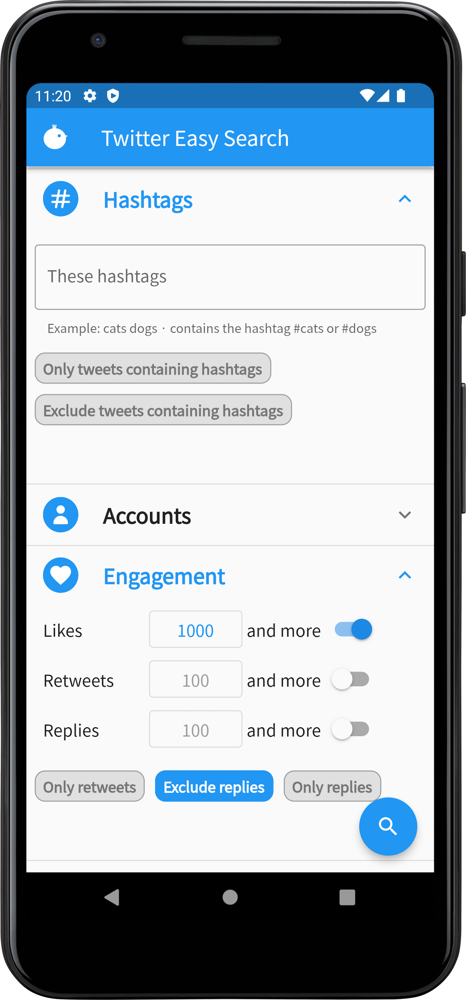
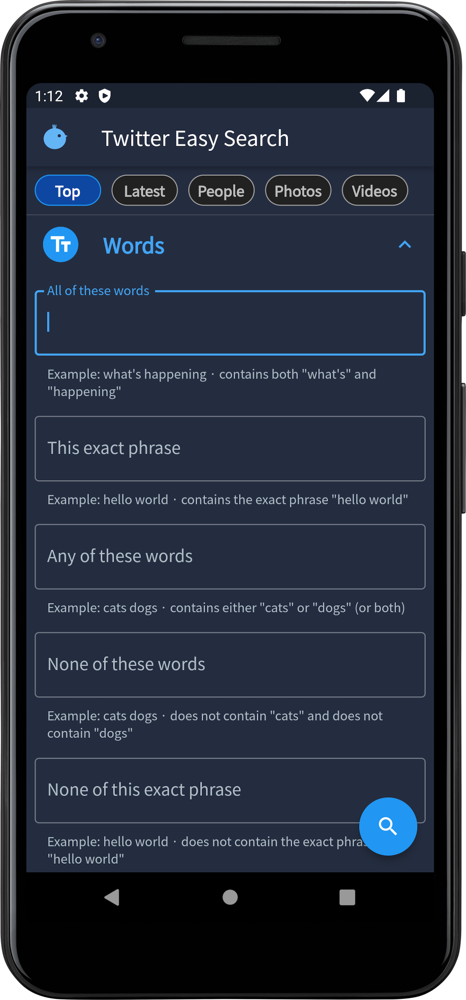

Twitter Advanced Search from app!
Never need to remember any search option!
Download app Learn more ↓
How it works
You can easily use plenty of twitter search option.
01
Enter words you want to search
Not only AND/OR/NOT search but entire words search is available.


02
Search tweets whose Likes are more than 1000!
You can easily search popular tweets. There are many options, so if you combine them, you will get information what you want to know.
03
Dark mode available
The mode will be automatically changed according to system settings.
